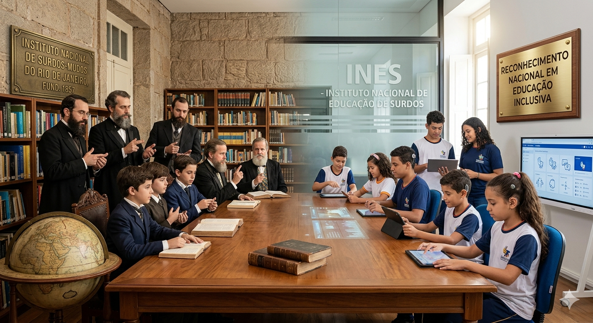
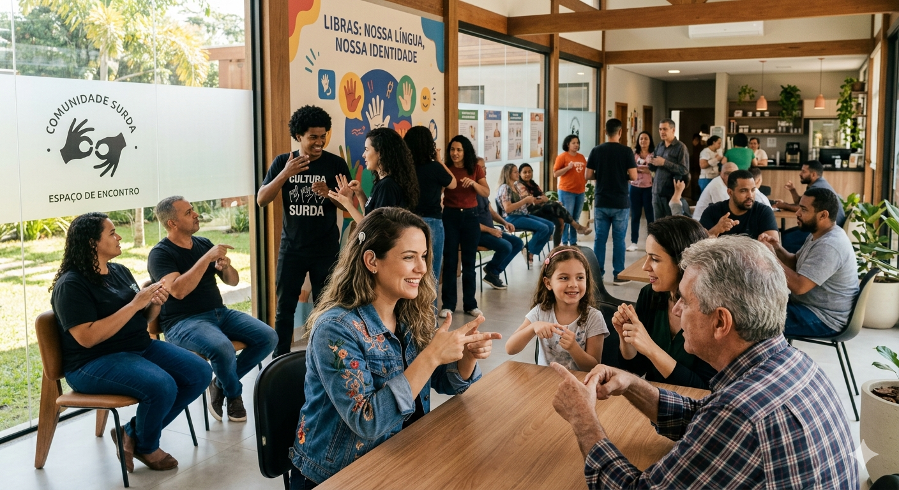

🏫
1857
O Instituto Nacional de Educação de Surdos tornou-se referência nacional na educação inclusiva.
A Libras representa inclusão, identidade, acessibilidade e cultura para milhões de pessoas surdas no Brasil.

O Instituto Nacional de Educação de Surdos tornou-se referência nacional na educação inclusiva.
A Libras surgiu da mistura da Língua de Sinais Francesa com sinais brasileiros.

Pessoas surdas enfrentaram preconceito e dificuldades no acesso à educação.

Em 2002, a Libras foi reconhecida oficialmente como meio legal de comunicação.

Escolas utilizam Libras para promover inclusão e acessibilidade.

A cultura surda representa união, identidade e orgulho da comunidade.